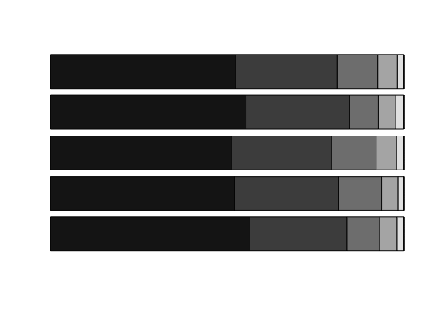

This function creates a descriptive plot for a question in an endorsement experiment.
endorse.plot(Y, data, scale, dk = 98, ra = 99, yaxis = NULL, col.seq = NA)
| Y | a character vector. List of the variable names for the responses to a question. Each variable name corresponds to each treatment status. |
|---|---|
| data | data frame containing the variables. |
| scale | an integer. The scale of the responses. The function
assumes that the responses are coded so that |
| dk | an integer indicating the value of the response variable
that is to be interpreted as ``Don't Know.'' Default is |
| ra | an integer indicating the value of the response variable
that is to be interpreted as ``Refused.'' Default is |
| yaxis | a character vector of the same length as |
| col.seq | a vector of colors for the bars or bar components. By default, a gradation of gray where the darkest indicates the highest support level. |
A descriptive plot for the responses to a question.
data(pakistan) Y <- c("Polio.a", "Polio.b", "Polio.c", "Polio.d", "Polio.e") yaxis <- c("Control", "Kashmir", "Afghan", "Al-Qaida", "Tanzeems") endorse.plot(Y = Y, data = pakistan, scale = 5)